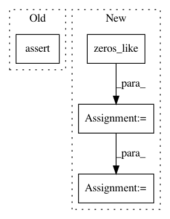

9902aaa77d03a2a5d1ccc3f8e260dfee2be86819,python/tests/test_embeddings.py,,test_normalize,#,123
Before Change
normed = norm_weights(wv.weights)
norms = np.linalg.norm(normed, axis=1)
for norm in norms:
assert norm == 0 or np.allclose(norm, 1, rtol=1e-4)
def test_vocab_truncation():
model = random_model()
After Change
def test_normalize():
wv = random_model()(keep_unused=True)
normed = norm_weights(wv.weights)
gold_norms = np.zeros_like(wv.weights)
for i in range(len(gold_norms)):
norm = np.sqrt(np.sum(np.square(wv.weights[i])))
gold_norms[i] = wv.weights[i] if norm == 0.0 else wv.weights[i] / norm
np.testing.assert_allclose(normed, gold_norms)
def test_vocab_truncation():
In pattern: SUPERPATTERN
Frequency: 4
Non-data size: 4
Instances
Project Name: dpressel/mead-baseline
Commit Name: 9902aaa77d03a2a5d1ccc3f8e260dfee2be86819
Time: 2018-06-19
Author: blester125@users.noreply.github.com
File Name: python/tests/test_embeddings.py
Class Name:
Method Name: test_normalize
Project Name: scipy/scipy
Commit Name: e9402dd24f071e7dbe4e0c2421f90f285ca31896
Time: 2015-11-15
Author: person142@users.noreply.github.com
File Name: scipy/ndimage/tests/test_filters.py
Class Name:
Method Name: test_gh_5430
Project Name: tensorflow/cleverhans
Commit Name: 17d926283721a5b8b97610701b47256364170a39
Time: 2020-11-23
Author: joel.frank@rub.de
File Name: cleverhans/future/tf2/utils_tf.py
Class Name:
Method Name: get_or_guess_labels
Project Name: kengz/SLM-Lab
Commit Name: 51975a8639d0b83544ec2f932567656b25bfc965
Time: 2018-09-02
Author: lgraesser@users.noreply.github.com
File Name: slm_lab/agent/algorithm/math_util.py
Class Name:
Method Name: calc_nstep_returns